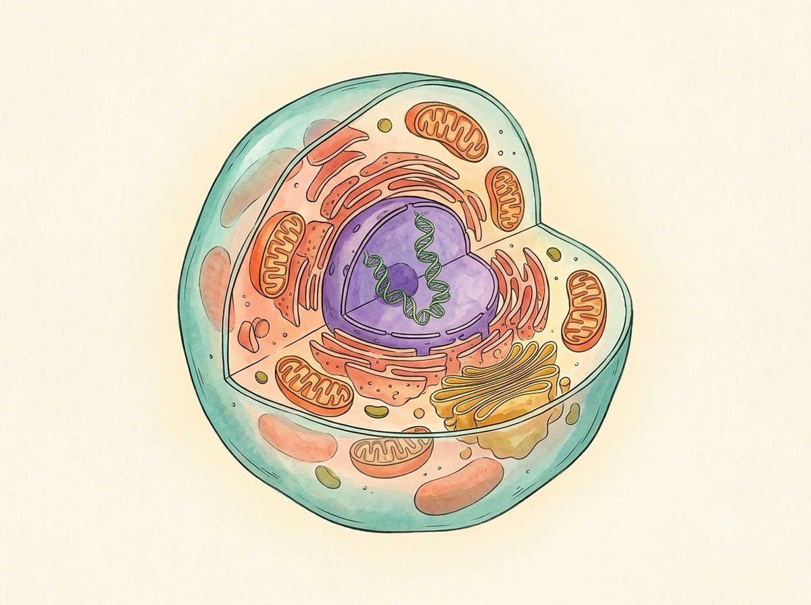

A First-Principles Field Guide
The Human
Cell
You are built from about thirty-seven trillion of these. Each one is a wet, humming little city — with power plants, a library, a postal service, a demolition crew and a skin that decides who gets in. Let's go look inside one.
Narrated as if Richard Feynman took up biology · curious, playful, built from the ground up · researched July 2026

A luminous, elegant scientific-illustration cutaway of a single human cell floating on warm cream paper, in the style of a naturalist's field-guide plate. Show the translucent outer membrane peeled open to reveal the violet nucleus at the center, several orange bean-shaped mitochondria with visible inner folds, a coiled green DNA strand, ribbons of endoplasmic reticulum and a stack of golden Golgi membranes, all softly backlit. Watercolor-and-ink texture, warm palette (teal, coral, violet, amber, olive) on cream, generous whitespace, no text or labels baked in. Target size ~1200×900px, 4:3 landscape; compose as cover art with the cell centred and safe margins — it is letterboxed into a 4:3 box, so keep nothing important near the edges.
Generate this with your image agent, then drop the file here.
Contents
- A Universe in a Speck what a cell is · scale
- The Gatekeeper Skin membrane · 2D anim
- The Library nucleus · DNA
- The Powerhouses mitochondria · 3D
- The Factory & the Post Office ribosomes · ER · Golgi
- The Skeleton & the Roads cytoskeleton · 2D anim
- The Recyclers lysosomes · autophagy
- How a Cell Becomes Two the cell cycle · mitosis
- When the Rules Break cancer · stem cells · you
Turn pages with the arrow keys (→ next, ← back, ↑ contents) or the buttons below. A few pages have things that move — a jiggling membrane, a walking motor protein, a mitochondrion you can spin with your mouse. Poke them.
Nine chapters & a cheatsheet · self-contained · reads offline